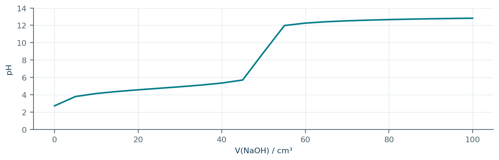
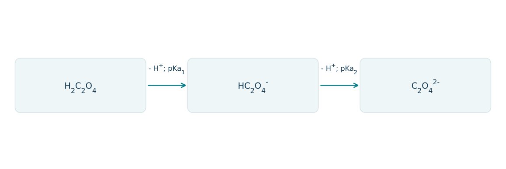
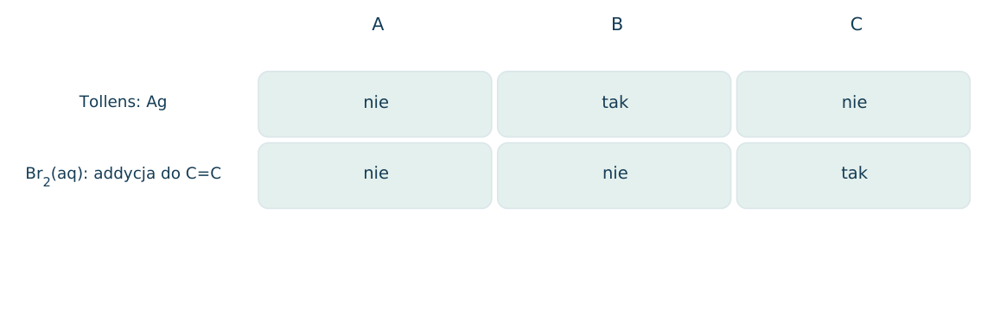
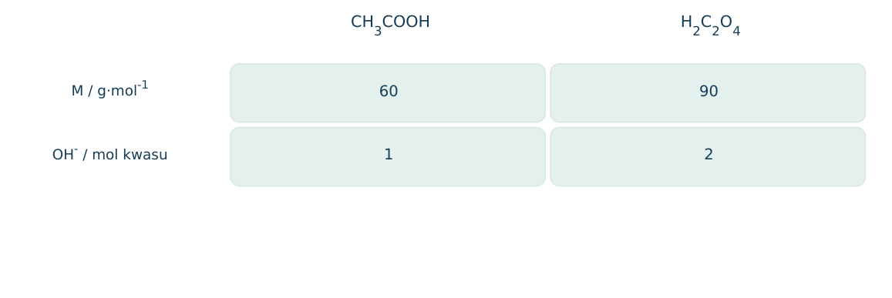
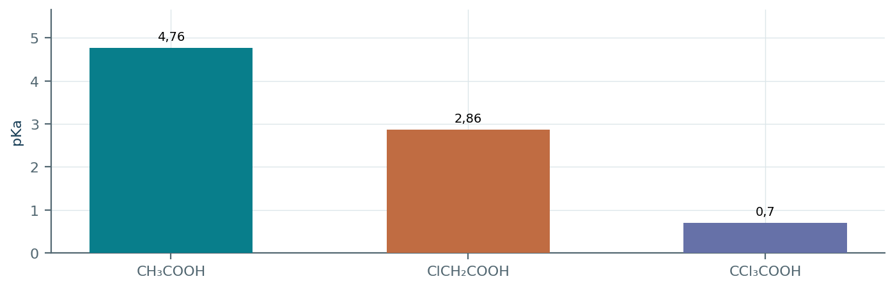
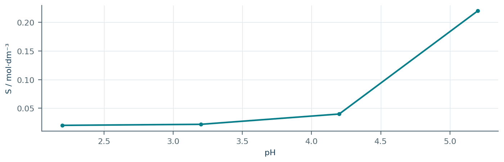
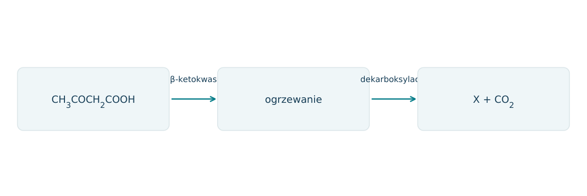

19.01 · 1 pkt
Nazwij HCOOH, CH3CH2COOH i HOOC-COOH.
Rozwiązanie
- Kwas metanowy (mrówkowy), propanowy i etanodiowy (szczawiowy).
50 zadań · 111 pkt · odpowiedzi rozwijane po samodzielnej próbie
← KatalogZadania PDFRozwiązania PDFDane do obliczeń: H 1; C 12; N 14; O 16; Na 23; Mg 24; Al 27; P 31; S 32; Cl 35,5; K 39; Ca 40; Cr 52; Mn 55; Fe 56; Cu 64; Zn 65; Ag 108; Br 80; I 127; Ba 137 (g/mol). NA = 6,02·1023 mol-1. Vm = 22,4 dm3/mol w warunkach normalnych (0°C, 1013 hPa). W 25°C Kw = 10-14. Dane podane w zadaniu mają pierwszeństwo.
Nazwij HCOOH, CH3CH2COOH i HOOC-COOH.
Oceń zdania A i B, wpisując P albo F. Każde zdanie fałszywe popraw lub krótko uzasadnij. A: Kwas octowy wydziela CO2 z NaHCO3. B: Większe stężenie kwasu zawsze oznacza większą Ka.
Podaj wzór półstrukturalny kwasu 2-hydroksypropanowego oraz grupy funkcyjne.
Który atom H w CH3COOH odpowiada za typową dysocjację kwasową w wodzie?
Napisz dysocjację CH3COOH z udziałem wody.
Dlaczego kwasy karboksylowe mają wyższe temperatury wrzenia niż węglowodory o zbliżonej masie?
Jak zmienia się rozpuszczalność nasyconych monokarboksylowych kwasów w wodzie wraz z wydłużaniem łańcucha?
Podaj wzory półstrukturalne kwasu palmitynowego i stearynowego.
Wyjaśnij, dlaczego kwas oleinowy może odbarwiać wodę bromową.
Dlaczego kwas mrówkowy może dawać dodatnią próbę Tollensa?
Napisz równanie reakcji kwasu octowego z Mg. Podaj możliwą obserwację lub sposób wykrycia zmiany.
Napisz równanie reakcji kwasu octowego z NaOH. Podaj możliwą obserwację lub sposób wykrycia zmiany.
Napisz równanie reakcji kwasu octowego z NaHCO3. Podaj możliwą obserwację lub sposób wykrycia zmiany.
Napisz równanie reakcji kwasu propanowego z CaCO3. Podaj możliwą obserwację lub sposób wykrycia zmiany.
Napisz równanie reakcji kwasu octowego z CuO po ogrzaniu. Podaj możliwą obserwację lub sposób wykrycia zmiany.
Napisz równanie reakcji kwasu stearynowego z NaOH. Podaj możliwą obserwację lub sposób wykrycia zmiany.
Dane Ka: HCOOH 1,8·10-4; CH3COOH 1,8·10-5; ClCH2COOH 1,4·10-3. Uszereguj moc kwasów i wyjaśnij wpływ Cl.
Dlaczego stężenie kwasu octowego nie jest miarą jego mocy kwasowej?
Ile cm3 NaOH 0,200 mol/dm3 potrzeba do zobojętnienia 1,20 g CH3COOH?
Oblicz masę NaHCO3 potrzebną do reakcji z 3,0 g CH3COOH.
Ile dm3 H2 w warunkach normalnych wydzieli 0,20 mola kwasu monokarboksylowego z nadmiarem Mg?
Próbka 0,90 g nasyconego monokarboksylowego kwasu zużywa 0,015 mola NaOH. Ustal M i wzór kwasu.
20,0 g roztworu kwasu octowego zużywa 10,0 cm3 NaOH 1,00 mol/dm3. Oblicz cp kwasu.
0,050 mola kwasu szczawiowego HOOC-COOH całkowicie zobojętniono. Oblicz n(NaOH).
Oblicz przybliżone pH 0,10 mol/dm3 kwasu octowego, Ka=1,8·10-5.
Jak rozróżnić kwas octowy i etanol roztworem NaHCO3? Podaj wynik dodatni i równanie.
Jak rozróżnić kwas stearynowy i oleinowy, mając oba rozpuszczone w odpowiednim obojętnym rozpuszczalniku? Podaj odczynnik i wyniki.
Dla CH3CH(OH)COOH zapisz reakcję z 1 molem NaOH na mol kwasu. Czy grupa alkoholowa musi się w niej zmienić?
0,10 mola bezwodnego kwasu mlekowego reaguje z nadmiarem Na; reagują COOH i alkoholowa OH. Oblicz n(H2) i n(Na).
Zapisz łagodne utlenienie grupy alkoholowej w kwasie mlekowym za pomocą [O], bez rozerwania szkieletu.
Dlaczego kwas mlekowy jest chiralny, a kwas glikolowy HOCH2COOH nie?
W syntezie CH3CH2CH2OH→A→B, A daje Tollensa, B wydziela CO2 z NaHCO3. Ustal A i B.
Napisz reakcję benzoesanu sodu z HCl i wyjaśnij możliwe pojawienie się białego osadu.
Roztwór A ma pH niższe niż roztwór B. Czy bez znajomości stężeń można wnioskować, że kwas A ma większą Ka? Uzasadnij.
Informacja: kwas salicylowy ma COOH i fenolową OH w położeniu 2. Napisz jego wzór uproszczony i przewidź reakcję z FeCl3.
Dlaczego CO2 może wyprzeć fenol z fenolanu, ale nie kwas octowy z octanu w analogicznej typowej próbie? Dane: Ka(H2CO3)=4·10-7, Ka(fenolu)=10-10, Ka(CH3COOH)=2·10-5.
Związek ma M=90 g/mol, jedną COOH i jedną alkoholową OH, a prosty szkielet z trzema C. Napisz dwa izomery konstytucyjne i wskaż chiralny.
Informacja: HO(CH2)3COOH może tworzyć pięcioczłonowy lakton przez wewnątrzcząsteczkową estryfikację. Narysuj cykliczny ester i podaj mały produkt uboczny.
Próbka mieszaniny CH3COOH i etanolu o masie 10,0 g zużyła 0,040 mola NaOH. Oblicz udziały masowe składników.
Kwas X ma M=90 g/mol, trzy C w prostym szkielecie, jedną COOH i jedną alkoholową OH; jest chiralny. a) Ustal wzór i nazwę X. b) Narysuj enancjomery Fischera. c) Zapisz reakcję z NaOH. d) Oblicz V(H2) w warunkach normalnych z 9,0 g bezwodnego X i nadmiaru Na; obie grupy reagują.
Przykładowy rysunek rozwiązania znajduje się w PDF-ie z rozwiązaniami przy tym numerze.
Każdy numer 41-50 oznacza jedno zadanie główne; podpunkty są oceniane osobno.
0,600 g czystego kwasu monokarboksylowego rozpuszczono i miareczkowano NaOH 0,200 mol/dm3. Wykres dotyczy całej próbki; punkt równoważnikowy przypada przy 50,0 cm3. Kwas jest nasycony i acykliczny. Na potrzeby wykresu przyjęto Ka=1,8·10-5.

19.41.1 (2 pkt) Wyznacz M i wzór kwasu, korzystając z M(CnH2nO2)=14n+32.
19.41.2 (1 pkt) Odczytaj pKa z połowy objętości równoważnikowej i zapisz wzór sprzężonej zasady.
19.41.3 (1 pkt) Wyjaśnij, dlaczego pH w punkcie równoważnikowym przekracza 7.
nkwasu=0,200·0,0500=0,0100 mol; M=60; n=2; CH3COOH.
Przy 25,0 cm3 pH≈4,74, więc pKa≈4,74; zasada CH3COO-.
CH3COO-+H2O⇌CH3COOH+OH-; anion słabego kwasu hydrolizuje zasadowo.
Dla H2C2O4 podano pKa1=1,25 i pKa2=4,25. Schemat obrazuje trzy formy. W modelu przy pH=pKa2 ilości HC2O4- i C2O42- są równe, a H2C2O4 pomijalny. Rozważ 0,0100 mola kwasu.

19.42.1 (2 pkt) Zapisz dwa stopniowe równania dysocjacji w wodzie.
19.42.2 (1 pkt) Ile moli NaOH potrzeba do pełnego zobojętnienia i jaka V roztworu 0,100 mol/dm3?
19.42.3 (1 pkt) Jaka forma przeważa przy pH=6,25? Oblicz stosunek form II/III.
H2C2O4+H2O⇌HC2O4-+H3O+; HC2O4-+H2O⇌C2O42-+H3O+.
0,0200 mola, V=0,200 dm3=200 cm3.
[C2O42-]/[HC2O4-]=10^(6,25-4,25)=100; przeważa C2O42-.
Kwas mlekowy CH3CH(OH)COOH można utlenić do CH3COCOOH. Wzór Fischera kwasu mlekowego podano na rysunku. Reakcja dotyczy grupy alkoholowej, bez dekarboksylacji.
19.43.1 (2 pkt) Nazwij grupy funkcyjne substratu i produktu oraz określ chiralność obu.
19.43.2 (1 pkt) Zapisz równanie z [O] i oblicz masę produktu z 9,00 g substratu przy wydajności 80%; M=90 i 88.
19.43.3 (1 pkt) Ile moli NaOH zużyje 1 mol każdego związku w zwykłym wodnym zobojętnianiu?
Substrat: hydroksylowa i karboksylowa, chiralny. Produkt: ketonowa i karboksylowa, achiralny.
CH3CH(OH)COOH+[O]→CH3COCOOH+H2O; n=0,100; m=0,0800·88=7,04 g.
Po 1 molu; zobojętniana jest grupa COOH, nie zwykła alkoholowa OH.
A to kwas etanowy, B kwas metanowy, C kwas prop-2-enowy. A i B mają pojedyncze wiązania C-C lub nie mają ich wcale. Rysunek przedstawia wyniki dwóch testów; przyjęto łagodne warunki i nadmiar odczynnika.

19.44.1 (2 pkt) Zapisz równanie utleniania HCOOH przez [O] i równanie addycji Br2 do C.
19.44.2 (1 pkt) Oblicz V CO2 w warunkach normalnych z 0,0200 mola B w reakcji utlenienia.
19.44.3 (1 pkt) Czy próba z NaHCO3 rozróżni wszystkie trzy kwasy?
HCOOH+[O]→CO2+H2O; CH2=CHCOOH+Br2→CH2BrCHBrCOOH.
0,0200·22,4=0,448 dm3.
Nie; wszystkie reagują z wodorowęglanem z wydzielaniem CO2, dlatego sam dodatni wynik nie rozpoznaje związku.
Mieszanina kwasu etanowego i kwasu szczawiowego ma masę 0,750 g. Do pełnego zobojętnienia zużyto 150 cm3 NaOH 0,100 mol/dm3. Przyjmij bezwodny H2C2O4, M=90, oraz CH3COOH, M=60. Każdy COOH reaguje z 1 molem OH-.

19.45.1 (2 pkt) Ułóż i rozwiąż układ równań ilości molowych.
19.45.2 (1 pkt) Oblicz masowy udział kwasu szczawiowego.
19.45.3 (1 pkt) Oceń twierdzenie: jednakowe liczby moli kwasów oznaczają jednakowe zużycie NaOH.
60x+90y=0,750; x+2y=0,0150. y=0,00500 mol, x=0,00500 mol.
m=0,450 g; udział 0,450/0,750=60,0%.
Fałsz; kwas szczawiowy ma dwie grupy COOH i zużywa dwa razy więcej NaOH przy pełnym zobojętnieniu.
W tabeli graficznej podano pKa kwasu etanowego 4,76, chloroetanowego 2,86 i trichloroetanowego 0,70. Przyjmij [H+]≈√(Ka c), tylko jeśli stopień dysocjacji jest mały. Dla dwóch pierwszych kwasów c=0,100 mol/dm3.

19.46.1 (2 pkt) Porównaj Ka kwasu chloroetanowego i etanowego; podaj iloraz.
19.46.2 (1 pkt) Oszacuj pH CH3COOH i sprawdź wielkość stopnia dysocjacji.
19.46.3 (1 pkt) Dlaczego powyższego przybliżenia nie wolno bez sprawdzenia użyć dla CCl3COOH?
Ka(chloro)/Ka(etan)=10^(4,76-2,86)=101,90≈79,4.
Ka=1,74·10-5; H≈0,00132; pH≈2,88; alpha≈1,32%, małe.
Ka≈0,20 jest większe od c; wzór dałby H≈0,141 mol/dm3>c, co przeczy bilansowi kwasu; potrzebne równanie pełne.
Dla kwasu benzoesowego rozpuszczalność formy obojętnej S0=0,0200 mol/dm3, a pKa=4,20. Przy stałym pH całkowita rozpuszczalność w uproszczeniu S=S0(1+10^(pH-pKa)). Model zakłada nadmiar ciała stałego i pomija zmiany objętości.

19.47.1 (2 pkt) Oblicz S przy pH=4,20 i 5,20 oraz iloraz tych wartości.
19.47.2 (1 pkt) Zapisz reakcję wyjaśniającą wpływ NaOH na rozpuszczanie.
19.47.3 (1 pkt) Co stanie się po zakwaszeniu nasyconego roztworu z pH=5,20 do 2,20 przy tej samej objętości?
S(pH=4,2)=0,0400; S(pH=5,2)=0,220 mol/dm3; iloraz 5,50.
C6H5COOH+OH-→C6H5COO-+H2O.
Większość anionu przejdzie w formę obojętną; rozpuszczalność spadnie i wytrąci się kwas, jeśli stężenie przekroczy nowe S.
Podano: β-ketokwasy o fragmencie RCOCH2COOH podczas ogrzewania tracą CO2, dając RCOCH3. Schemat przedstawia kwas 3-oksobutanowy. Reakcja jest ilościowa, bez innych gazów.

19.48.1 (2 pkt) Zapisz pełne równanie i nazwij X.
19.48.2 (1 pkt) Oblicz masę X i objętość CO2 (w.n.) z 10,2 g kwasu o M=102.
19.48.3 (1 pkt) Czy C grupy COOH ulega utlenieniu, skoro przechodzi do CO2? Ustal stopnie.
CH3COCH2COOH→CH3COCH3+CO2; propanon.
n=0,100 mol; mX=5,80 g; VCO2=2,24 dm3.
Tak, +III w COOH do+IV w CO2; inny fragment ulega redukcji, co zachowuje bilans redoks całej cząsteczki.
Kwas salicylowy ma COOH i fenolową OH w sąsiednich pozycjach pierścienia. Przyjmij, że NaHCO3 odszczepia tylko proton COOH, natomiast nadmiar NaOH może odszczepić oba kwaśne protony. 1 mol COOH daje 1 mol CO2 z NaHCO3.
19.49.1 (2 pkt) Zapisz wzory soli po 1 molu NaHCO3 oraz po 2 molach NaOH na mol kwasu.
19.49.2 (1 pkt) Oblicz ilość NaOH do pełnego zobojętnienia 0,0200 mola kwasu oraz V CO2 z takiej samej ilości kwasu i nadmiaru NaHCO3 w warunkach normalnych.
19.49.3 (1 pkt) Dlaczego sama liczba dwóch grup zawierających OH nie oznacza, że obie reagują z NaHCO3?
C6H4(OH)COONa oraz C6H4(ONa)COONa (podstawniki orto).
Pełna sól zNaOH: 0,0400 mola OH-; zNaHCO3: 0,0200 mola CO2, V=0,448 dm3.
Reagują zgodnie z kwasowością; COOH jest znacznie silniejszym kwasem niż fenolowa OH, dla której reakcja z HCO3- nie jest w tych warunkach ilościowa.
Próbka technicznego kwasu benzoesowego zawiera obojętną, nierozpuszczalną domieszkę bez grup kwasowych. Z 2,00 g próbki i nadmiaru NaHCO3 otrzymano suchego CO2 o p=100 kPa, V=0,300 dm3, T=300 K. R=8,314 kPa·dm3/(mol·K), Mkwasu=122.
19.50.1 (2 pkt) Oblicz czystość masową kwasu, korzystając z pV=nRT.
19.50.2 (1 pkt) Zapisz równanie kwasu z wodorowęglanem sodu.
19.50.3 (1 pkt) Jaki skutek miałoby nieuwzględnienie pary wodnej, gdyby gaz nie był suchy?
nCO2=30/2494,2=0,01203 mol; mkwasu=1,467 g; czystość≈73,4%.
C6H5COOH+NaHCO3→C6H5COONa+CO2+H2O.
Ciśnienie CO2 byłoby mniejsze od całkowitego; przypisanie całości CO2 zawyżyłoby n gazu i czystość kwasu.